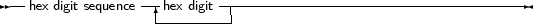
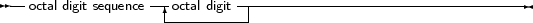
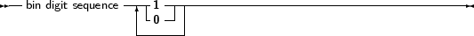
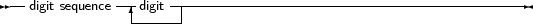
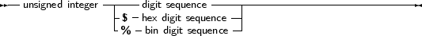
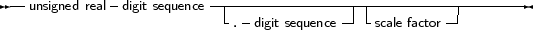
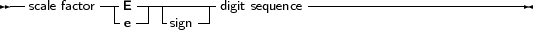
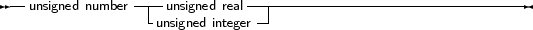
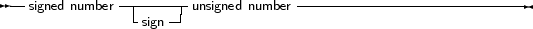

Numbers are by default denoted in decimal notation. Real (or decimal) numbers are written using
engineering or scientific notation (e.g. 0.314E1).
For integer type constants, Free Pascal supports 4 formats:
- Normal, decimal format (base 10). This is the standard format.
- Hexadecimal format (base 16), in the same way as Turbo Pascal does. To specify
a constant value in hexadecimal format, prepend it with a dollar sign ($). Thus,
the hexadecimal $FF equals 255 decimal. Note that case is insignificant when using
hexadecimal constants.
- As of version 1.0.7, Octal format (base 8) is also supported. To specify a constant in
octal format, prepend it with a ampersand (&). For instance 15 is specified in octal
notation as &17.
- Binary notation (base 2). A binary number can be specified by preceding it with a
percent sign (%). Thus, 255 can be specified in binary notation as %11111111.
The following diagrams show the syntax for numbers.
_________________________________________________________________________________________________________Numbers










___________________________________________________________________
Remark: All decimal constants which do no fit within the -2147483648..2147483647 range are silently and
automatically parsed as 64-bit integer constants as of version 1.9.0. Earlier versions would convert
it to a real-typed constant.
Remark: Octal and Binary notation are not supported in TP or Delphi compatibility mode.